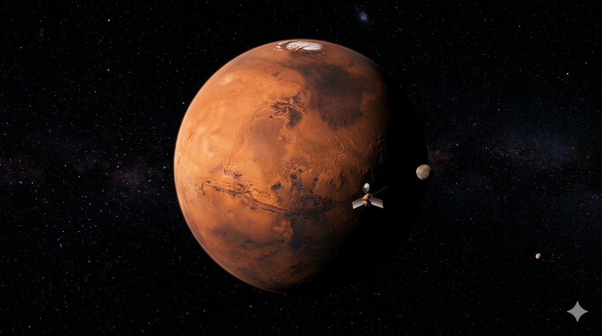
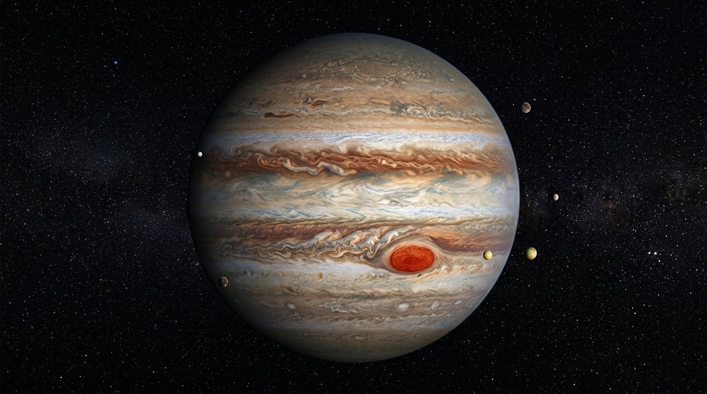
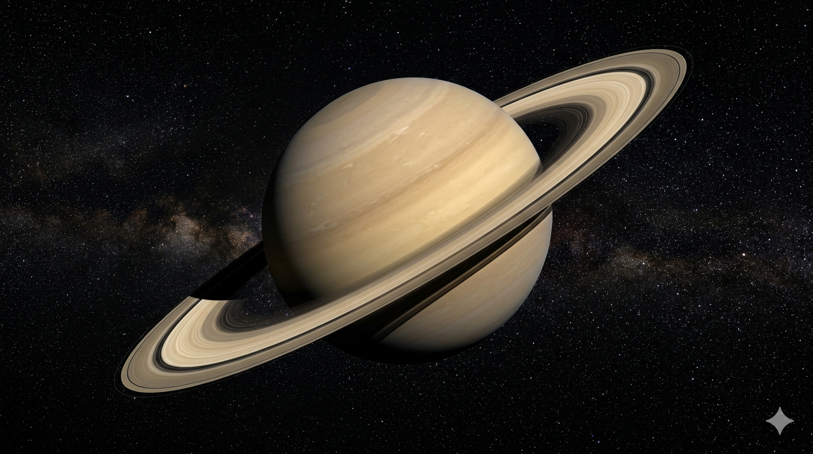

Descobre planetas fascinantes, missões históricas e tecnologias que irão levar a humanidade às estrelas.
Iniciar Exploração
Conhecido como o planeta vermelho e principal candidato para futuras colónias humanas.

O maior planeta do Sistema Solar, famoso pela Grande Mancha Vermelha.

Um gigante gasoso conhecido pelos seus espetaculares anéis.
Primeira missão a levar seres humanos à Lua em 1969.
A nave espacial mais distante já enviada pela humanidade.
O telescópio mais avançado já construído para observar o universo.
Desenvolvimento de habitats sustentáveis fora da Terra.
Sistemas de propulsão mais eficientes para longas viagens.
Conceito revolucionário para transportar cargas ao espaço.